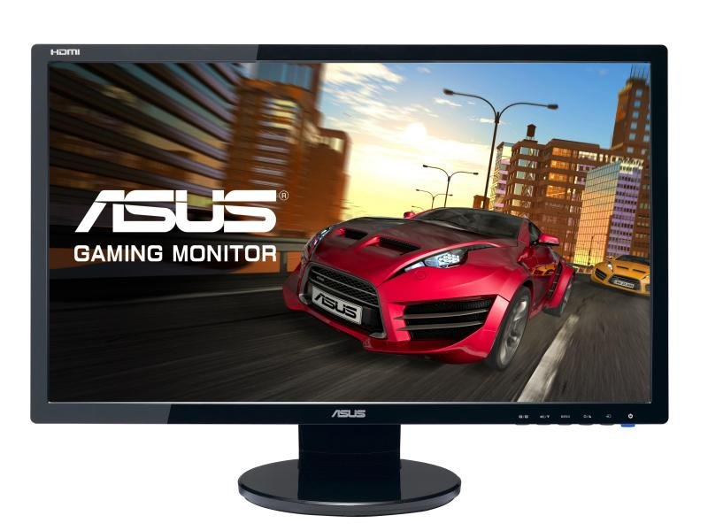

Monitor je displej slúžiaci na zobrazovanie textových a grafických informácií v oblasti počítačov, pôvodne najmä
na zobrazovanie hlásení o stave systému a priebehu jeho činnosti.
Na rozdiel od televízora obvykle nie je vybavený vysokofrekvenčným vstupným obvodom, resp. tunerom.
Signál je do monitora prenášaný analógovo alebo digitálne.
Základné typy sú: obrazovkový monitor a monitor LCD.
Klasické obrazovky v súčasnosti končia, ich uplatnenie je vlastne už len v špeciálnych aplikáciách, prevládajúcou
technológiou je LCD.
Princíp zobrazenia na obrazovkovom monitore je rovnaký ako pri televízii.
Zobrazuje obrazovka, čo je vlastne katódová trubica premieňajúca vyžiarený elektrónový lúč pomocou vychyľovania a
luminoforu na viditeľný obraz.
Monitor LCD zobrazuje pevne dané body polarizáciou jednotlivých bodov na obrazovke.
LCD bod vlastne zakrýva podsvietenú zadnú plochu monitora.
Zmenou polarizácie sa bod stáva priehľadným a je viditeľné svetlo prichádzajúce zo zadného podsvietenia.
Opätovnou zmenou polarizácie sa bod stane nepriehľadným a tým sa javí ako čierny.
Oba typy monitorov zobrazujú text, alebo obraz podľa inštrukcií počítača, ktoré sú do formy zobraziteľnej monitorom
spracované v tzv. grafickej karte počítača.
Veľkosť monitora sa udáva najčastejšie v palcoch.
